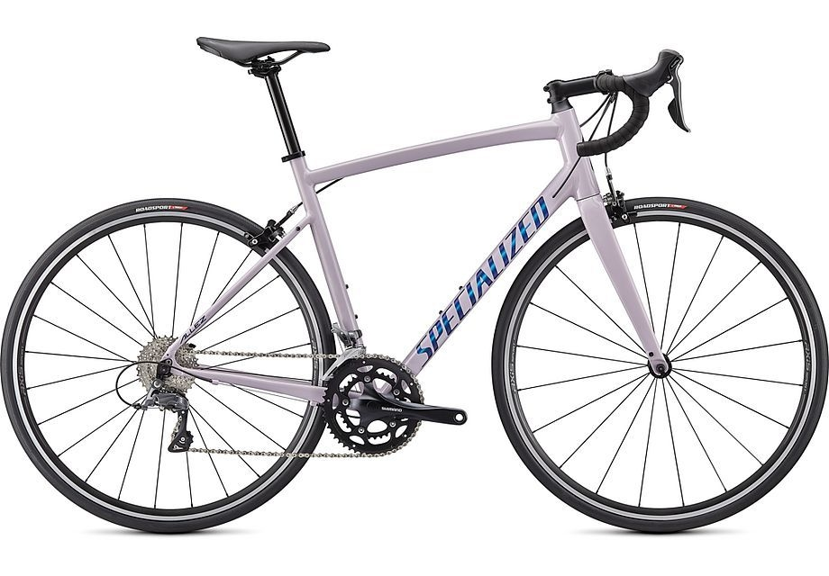

The Specialized Allez Men’s Road Bike redefines what it means to be "entry-level." Focusing on weight, refinement, and reliability like nothing else in its class, the Allez is the first to make these technologies accessible to everyone. Whether you're just getting into road cycling, commuting, or looking for a new bike, the Allez is just as performance-packed as it is versatile.
This Allez has all the specs you need from an entry-level road bike and more – including reliable Shimano Claris shifting, durable Axis Sport alloy wheels, super-comfy body geometry bridge saddle and well-protected Espoir Sport tyres.
